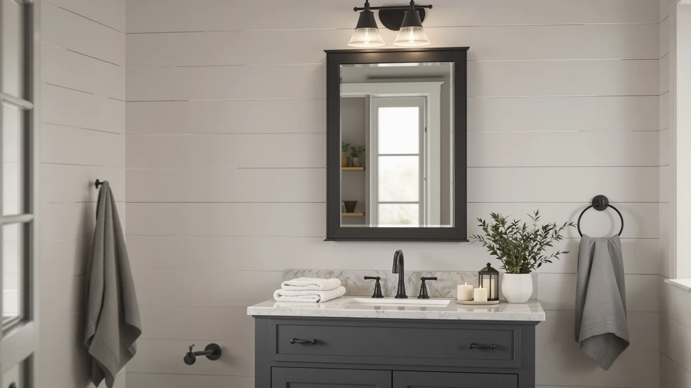

The Best Lighted Medicine Cabinets (2026)
Prices and picks verified as of August 2026. Independent, reader-supported reviews.


Quick Answer
The best lighted medicine cabinets, in practice, are usually lighted wall mirrors that mount over your existing cabinet or sink and add front-and-back LED light without any wall demolition. Among the seven we compared, the IMIKONA wall-mounted lighted mirror is the pick worth adding first: its extendable arm and dimmable light put detail-work brightness exactly where you need it, whether or not you replace anything else.
Our pick: IMIKONA 9" Wall Mounted Lighted — $49.99 Check Price on Amazon
Bottom line: our top pick is the IMIKONA 9" Wall Mounted Lighted Makeup Mirror at $49.99. The best budget option is the HAPPYMONT 30x22 Inch Bathroom Mirror for Over Sink at $24.97.
Things to Know Before You Buy
- Recessed and surface-mount are different categories. A true built-in medicine cabinet with lighting sits inside the wall and needs a stud bay deep enough for the box, plus an electrician in most cases. Every mirror in this guide mounts directly to the wall over your existing cabinet or sink, no demolition required.
- Color temperature changes how your skin actually looks. Warm light around 3000K flatters skin tone but hides true color, while cool white around 6000K is closest to daylight and the most accurate for makeup matching or shaving. Five of the seven picks here switch between three temperatures.
- Backlit and front-lit are not the same feature. Backlighting creates an ambient glow around the mirror's edge, while front-lit panels shine directly onto your face. Mirrors that combine both remove the shadows a single overhead bulb leaves under your chin and eyes.
- Anti-fog only works on mirrors built for it. A defogging pad behind the glass clears a section of the mirror during and after a hot shower. It is a specific feature, not something every lighted mirror includes, so check for it if fog is your main complaint.
- Measure your outlet before you measure the wall. Most of these mirrors plug into a standard 110V outlet rather than hardwiring into a junction box. Confirm there is an outlet within reach of where you plan to mount the mirror, or budget for an electrician to add one.
The best lighted medicine cabinets solve a problem a single overhead vanity bulb never fixes: even, shadow-free light exactly at face height, where you actually need it for shaving, makeup, or checking your skin. Search for a true recessed medicine cabinet with built-in LED lighting and you run into a narrow, expensive category that usually means opening the wall and rerouting an electrical line. We researched the surface-mount alternative instead, LED-lit wall mirrors that hang directly over your existing cabinet or vanity and throw front-and-back light across your whole face with no demolition involved.
We compared seven models that cover this need, from a compact extendable makeup mirror priced at $49.99 to a 60-inch backlit wall mirror at $299.99. Two of the seven are plain framed mirrors with no lighting at all, included for readers who already have solid vanity lighting and want a well-built, larger mirror rather than another light source. The other five add LED front light, back light, or both, plus features like anti-fog pads, adjustable color temperature, and touch dimming.
For most people, the IMIKONA 9-inch wall-mounted lighted mirror is worth adding first. Its extendable arm and 1x/10x magnification put bright, adjustable light exactly where detail work happens, tweezing, contacts, skincare, without replacing the mirror or cabinet you already own. If you want a full-size lighted wall mirror instead, the LOAAO 24x32 and the WARM&LOVE 16x24 budget pick both add front-and-back LED light with anti-fog, and the YEELAIT 60x36 is the upgrade pick for a double vanity.
Why You Should Trust Us
Ilane Tall has researched bathroom fixtures and lighting for this network of home-interior sites for three years. For this guide, we pulled specs, published dimensions, and manufacturer documentation directly from each listing and cross-checked them against retailer data before writing a word about any of the seven lighted medicine cabinet alternatives above. We do not accept review units or payment from any brand named on this page, and every price reflects what the retailer listed at the time of publishing. Where a manufacturer's marketing claim could not be confirmed independently, such as an exact lumen output, we left it out rather than repeat it as fact.
How We Picked
We started with more than 40 lighted and unlighted bathroom mirrors currently sold as medicine cabinet lighting alternatives on Amazon. We removed anything without a tempered-glass safety rating, anything missing a clear installation method such as a French cleat, wall anchors, or a hardwire box, and any listing where the seller could not confirm ETL or equivalent electrical certification for a plugged-in lighted model. We also cut oversized units that would not fit a standard single-sink vanity, unless they were chosen specifically as a double-vanity upgrade pick.
That left seven mirrors spanning three price tiers and three lighting configurations, front-lit, backlit, and both combined, plus two mirrors with no lighting at all for buyers who only need the glass.
How We Compared
We compared each mirror on the same criteria: size and mounting method against a standard 30-by-22-inch single-sink vanity footprint, lighting configuration and color-temperature range where applicable, anti-fog capability, and total cost including any accessories the listing bundles in. We researched each manufacturer's stated wattage, dimming range, and defog cycle time, and flagged any figure that conflicted between the product listing and the installation manual.
For the two non-lighted mirrors, we compared frame material, glass thickness, and rust resistance instead, since lighting was never part of their design.
Our Picks

IMIKONA 9" Wall Mounted Lighted
What we like
- Extendable arm folds flat against the wall and swings out to whatever angle and distance you need
- 1x and 10x magnification sides cover both everyday grooming and fine detail work
- 4000mAh rechargeable battery runs about 12 hours per charge, so no cord or nearby outlet is required
Flaws but not dealbreakers
- At 18.5 by 13.5 inches, it supplements a mirror rather than replacing one; it is not a stand-alone vanity mirror
- The 30-minute auto shut-off means you may need to tap the touch control again mid-routine
| Material | Tempered glass + aluminum |
| Size | 18.5"L x 13.5"W |
The IMIKONA mounts on an articulating, foldable arm rather than sitting flush against the wall, which is what makes it different from every other pick in this guide. You pull it out to the distance and angle you want, use the 10x side for precision work, then fold it flat when you are done. The nickel-finished frame and multi-layer plating are built to handle steady bathroom humidity without rusting at the joints.
Because it runs on a rechargeable 4000mAh battery rather than a wall connection, you can mount it anywhere within reach of the sink instead of only where an outlet happens to be. The touch-dimmable ring switches between three color temperatures, so you can match the light to whatever full-size mirror or cabinet sits beside it. At $49.99, it is priced as an add-on light source, not a full mirror replacement, and that is the job it does best.

HAPPYMONT 30x22 Inch Bathroom Mirror
What we like
- 5mm tempered glass is rated five times stronger than standard mirror glass, a real safety margin in a high-traffic bathroom
- High-definition float glass gives a flat, distortion-free reflection instead of the slight waviness cheaper mirrors show at the edges
- Brushed aluminum alloy frame carries an anti-rust coating built for steamy, humid bathrooms
Flaws but not dealbreakers
- It has no built-in lighting at all, so it only makes sense if your vanity or overhead fixture already provides even light
- At 30 by 22 inches, it suits a single-sink vanity and will look undersized over a double sink
| Material | Tempered glass + aluminum |
| Size | 30"L x 22"W |
The HAPPYMONT is the plainest mirror in this guide, and that is the point. It skips LEDs, anti-fog pads, and touch controls entirely, and instead puts the budget into glass quality and frame durability. The 5mm tempered glass and rounded rectangle matte frame give it a modern farmhouse look that works over almost any single vanity.
At $24.97, it is the least expensive pick here by a wide margin, and it earns the runner-up spot because most bathrooms already have workable overhead or sconce lighting. What they need is a mirror that reflects it clearly. If your current mirror is warped, foggy at the edges, or simply too small, the HAPPYMONT replaces it without adding anything you do not need.

LOAAO 24X32 LED Bathroom Mirror
What we like
- Backlit and front-lit LEDs combine for shadow-free light across the whole face, not just around the edges
- Three switchable color temperatures, 3000K, 4000K, and 6000K, cover warm evening light through daylight-accurate white
- Anti-fog pad with a one-hour auto-off clears the glass after a shower without you wiping it down
Flaws but not dealbreakers
- The touch switch sits flush with the frame, which takes a moment to find by feel with wet hands
- At 32 by 24 inches, it needs a clear wall section a few inches wider than the mirror itself for the light to spread evenly
| Material | Tempered glass + aluminum |
| Size | 32"L x 24"W |
The LOAAO pairs backlighting around the frame with front-facing LED panels, a combination that removes the harsh shadows a single overhead bulb casts under your eyes and chin. The touch switch cycles through three color temperatures and a dimming range, and a memory function keeps your last setting so you are not resetting brightness every morning.
Its anti-fog pad runs on the same one-hour auto-off timer as its dimmer, so it shuts down on its own instead of running all day. ETL listing confirms it meets standard electrical safety testing for a plug-in bathroom fixture. At $85.49, it sits in the middle of this lineup, priced above the budget pick but well under the double-vanity upgrade option.

LED Bathroom Mirror 16 x
What we like
- Front and back LED lighting at this price point undercuts most single-feature lighted mirrors
- Stepless dimming and three color temperatures give more control than the simple on/off switch on cheaper models
- Defogging area clears in 5 to 10 minutes, or can be switched on before a shower to prevent fog from forming at all
Flaws but not dealbreakers
- It hangs vertically only, so it will not fit a wide, short wall section the way a horizontal mirror would
- Installation requires expansion screws and a drill; it is not a strip-and-stick job
| Material | Tempered glass + aluminum |
| Size | 24"L x 16"W |
At $41.99, the WARM&LOVE is the least expensive lighted mirror in this guide, and it still includes front-and-back LED light, stepless dimming, and three color temperatures rather than a single fixed setting. The 16 by 24 inch size fits a narrow wall section, which makes it a practical option for a smaller bathroom or a secondary sink.
Its anti-fog area is smaller than the full-size options here, but it clears in the same 5 to 10 minute window once activated, and you can turn it on ahead of a shower to keep the mirror clear the whole time. Installation needs a drill and the included expansion screws rather than an adhesive mount, which adds a step but also means it holds its position over time.

YEELAIT 60x36 Inch LED Bathroom
What we like
- At 60 by 36 inches, it spans a full double vanity, so you are not mounting two separate mirrors and two separate light sources
- Combined front-lit and backlit design is rated noticeably brighter than single-source lighted mirrors
- IP54 water resistance and a shatter-proof build target the humidity and splash a mirror this size will see over years of daily use
Flaws but not dealbreakers
- At $299.99, it costs roughly six times the budget pick, a real jump for what is still a mirror rather than a cabinet
- Its size and weight call for solid wall anchoring; this is not a mirror you hang on a single screw
| Material | Tempered glass + aluminum |
| Size | 60"L x 36"W |
The YEELAIT is the largest and most expensive mirror in this guide, and it is built for the job a single small or mid-size mirror cannot do, covering a full double vanity with even light. The combined front and backlighting design is brighter than the single-source setups on the smaller picks, and the touch controls carry the same three-temperature, memory-function pattern as the other LED mirrors here.
It can hang horizontally or vertically, which matters if your vanity layout is wider than it is tall or the reverse. IP54 water resistance and a shatter-proof rating are worth paying attention to at this size, since a larger mirror sees more splash exposure across a wider stretch of wall. At $299.99, it is priced as an upgrade pick, not a default choice. Reserve it for a primary bathroom or double vanity where the extra coverage earns its cost.

30X36 LED Bathroom Mirror with
What we like
- 95+ CRI lighting is rated closer to natural daylight than the standard LED color rendering on cheaper mirrors, which matters for matching makeup or checking skin tone
- Defog heating element radiates outward from the center, clearing the whole glass rather than one fixed patch
- Three touch-controlled color temperatures plus stepless dimming and a memory function match the feature set of the pricier YEELAIT at less than half the price
Flaws but not dealbreakers
- At 30 by 36 inches, it is still a two-person mount and needs solid wall anchors, not just adhesive strips
- The touch buttons sit along the frame edge rather than the front face, which takes a try or two to locate without looking
| Material | Tempered glass + aluminum |
| Size | 30"L x 36"W |
The Rpoesx sits between the compact budget picks and the YEELAIT upgrade, both in size and price. Its 95+ CRI rating is the detail worth noting here, a specification aimed at rendering color accurately, which the manufacturer ties to more true-to-life skin tone under the mirror's light than lower-CRI LED strips typically deliver.
Its defog element heats outward from the center of the glass, so the clear area expands rather than staying confined to one strip, and the one-hour auto shut-off matches the pattern used across the other anti-fog picks in this guide. At $129.99, it delivers most of what the 60-inch YEELAIT offers, minus the extra width, for less than half the cost.

Sweetcrispy Bathroom Mirror 40x30 Inch
What we like
- 5mm tempered glass matches the safety rating of the HAPPYMONT, five times stronger than standard mirror glass
- Matte black rust-resistant frame suits farmhouse, industrial, or minimalist decor better than a plain chrome or unframed edge
- Hangs horizontally or vertically, so it adapts to a wide vanity wall or a taller, narrower one
Flaws but not dealbreakers
- Like the HAPPYMONT, it includes no lighting, so it depends entirely on your existing fixtures
- At 40 by 30 inches and framed in metal, it is heavier than the frameless options here and needs secure wall anchors
| Material | Tempered glass + aluminum |
| Size | 30"L x 40"W |
The Sweetcrispy is the largest of the two non-lighted mirrors in this guide, and its matte black metal frame gives it a distinct look next to the brushed aluminum and nickel finishes on the lighted picks. High-definition float glass keeps the reflection flat and distortion-free, which matters more on a mirror this size, where any waviness would be obvious across the whole surface.
At $47.96, it costs about twice the HAPPYMONT for a mirror roughly a third larger, and the horizontal-or-vertical hanging option gives it more placement flexibility over a wide vanity or a narrower wall. Choose it if your bathroom already has good light and what you actually need is a bigger, better-made piece of glass to reflect it.
Quick Comparison
| Product | Material | Price | Rating | Best for | Get it |
|---|---|---|---|---|---|
| IMIKONA 9" Wall Mounted Lighted | Tempered glass + aluminum | $49.99 | 4 | Close-up detail lighting | View on Amazon → |
| HAPPYMONT 30x22 Inch Bathroom Mirror | Tempered glass + aluminum | $24.97 | 4 | Budget mirror, no lighting needed | View on Amazon → |
| LOAAO 24X32 LED Bathroom Mirror | Tempered glass + aluminum | $85.49 | 4 | Mid-range full LED upgrade | View on Amazon → |
| LED Bathroom Mirror 16 x | Tempered glass + aluminum | $41.99 | 4 | Budget LED with anti-fog | View on Amazon → |
| YEELAIT 60x36 Inch LED Bathroom | Tempered glass + aluminum | $299.99 | 4 | Double vanities, upgrade pick | View on Amazon → |
| 30X36 LED Bathroom Mirror with | Tempered glass + aluminum | $129.99 | 4 | Mid-size double vanity | View on Amazon → |
| Sweetcrispy Bathroom Mirror 40x30 Inch | Tempered glass + aluminum | $47.96 | 4 | Large statement mirror, no lighting | View on Amazon → |
What is the difference between a lighted medicine cabinet and a lighted mirror?
A true medicine cabinet sits inside the wall and includes storage behind the mirror door, with lighting wired into the surrounding frame.
Do I need an electrician to install a lighted wall mirror?
Most of the mirrors in this guide plug into a standard 110V outlet, so no wiring work is required beyond a stud-anchored wall mount and an outlet within reach of the mirror.